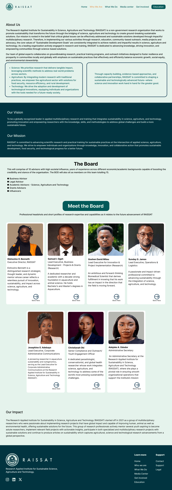
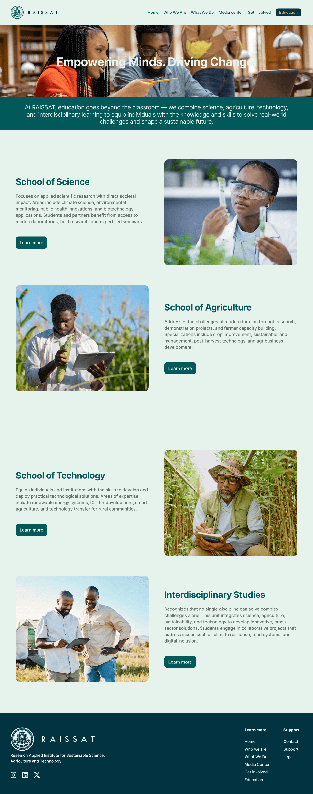
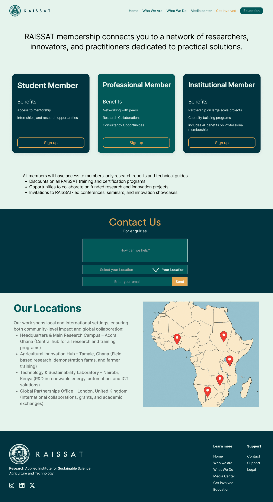
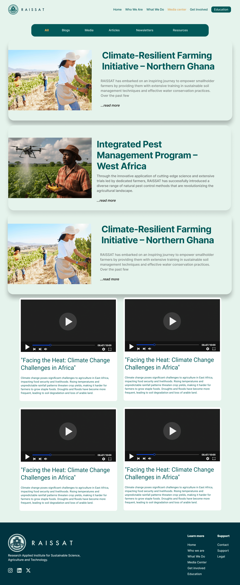
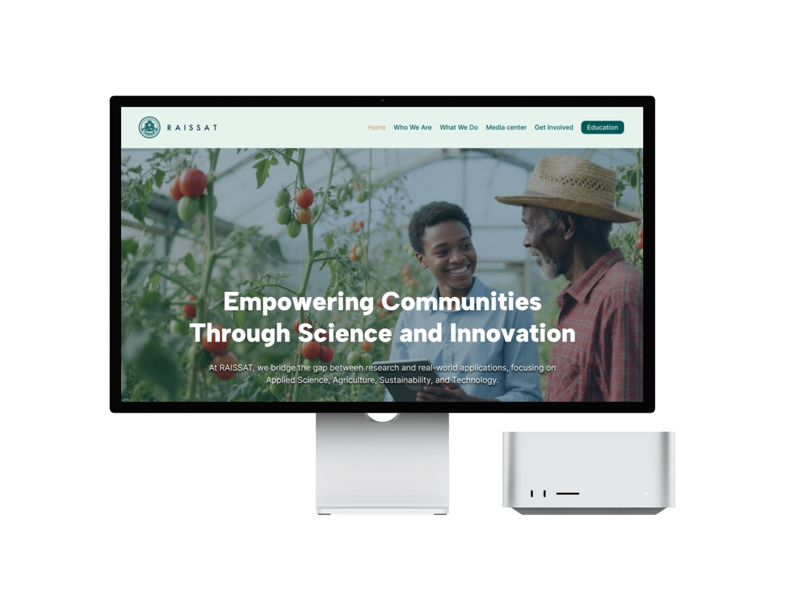

Product & Web Design · 2025
RAISSAT
A research institute's digital home — a multi-section platform that turns applied science, agriculture and technology into a public mission to empower communities.
I led the product and design and built the site with AI — shaping the content architecture, the membership journey and every section from home to media hub.

Overview
A young research institute has one hard problem: looking as credible as it already is. RAISSAT needed a digital home that could prove its standing, lay out its work, and recruit the next generation — all in a single, calm scroll.
Founded in 2021 by a group of multidisciplinary researchers, the Research Applied Institute for Sustainable Science, Agriculture and Technology needed a site doing three jobs at once: proving credibility, presenting its programmes, and turning curiosity into membership. I designed and built it — six connected sections under one calm, sage-and-teal identity — and refined every flow with AI.
The product
Credibility
you can scroll.
From a named board of advisors to a pan-African footprint, every page is built to make a young institute feel established — calm, evidence-led, and unmistakably on a mission.
The sections
Six sections, one mission.
The site sequences a visitor from who we are to what we do, then on to learning and joining — a deliberate narrative, not just a menu.

An institute, introduced
About, vision and mission lead into the full board — fifteen named directors and executives with photographed profiles — and an impact statement that dates the work to 2021. It's a credibility page first.
Science, turned into services
Five focus areas — Agriculture & Food Security, Public Health Advocacy, Environmental Sustainability, Research & Innovation, and Technology for Social Impact — each framed around how students and youth get involved.

Four schools under one roof
Empowering Minds. Driving Change. The learning arm splits into Schools of Science, Agriculture and Technology plus Interdisciplinary Studies — each with its own focus and a clear path to learn more.

A membership funnel and a map
Three tiers — Student, Professional and Institutional — each with its own benefits and a sign-up. Below sits a contact form and a pan-African map pinning Accra, Tamale, Nairobi and London.

A newsroom for the mission
A filterable hub — Blogs, Media, Articles, Newsletters and Resources — featuring field stories like the Climate-Resilient Farming Initiative alongside embedded video, so the institute keeps publishing proof of its work.
Design decisions
Making a young institute feel established.
A calm, credible identity
Sage backgrounds, deep-teal structure and a single gold accent give the institute a trustworthy, grown-up feel.
Content as architecture
Six sections sequence a visitor from "who" and "what" to "learn" and "join" — a story, not a sitemap.
A membership funnel
Three clear tiers turn interest into sign-ups, with benefits scoped to students, professionals and institutions.
Proof over promises
Named board profiles, a dated origin and a real media hub make the mission feel substantiated, not aspirational.
Pan-African by design
A locations map and hubs in Ghana, Kenya and the UK signal genuine reach without overclaiming.
Built with AI
I designed and assembled the whole platform with AI — moving from blank page to a complete, on-brand site fast.
Problem · Process · Craft
Make a young institute feel established.
A 2021 research institute had the substance but not the digital presence. RAISSAT needed a site that proved its credibility, explained its work, and recruited members — and did all three fast.
Architect the story
I sequenced six sections — who, what, learn, join, media — so a visitor moves from curiosity to membership, not just a menu.
Build a credible identity
A calm sage-and-teal system, named board profiles and a dated origin make a young institute feel substantiated, not aspirational.
Build it with AI
I designed and built the platform with AI — six connected, responsive sections — moving from a blank page to a complete, on-brand site quickly.
Design the funnel
Three membership tiers and a clear contact path turn interest into sign-ups — refined flow by flow.
The result
A research institute, ready for the public.
The finished platform gives RAISSAT a home that recruits members, publishes its work and stands up its credibility — six sections, one identity, designed and built end to end and refined with AI.
